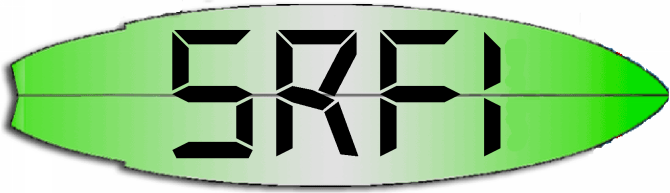

Scheme Requests for Implementation

The purpose of the Scheme Requests for Implementation (SRFI)
process is to help Scheme users write portable, useful code.
We write concrete, detailed proposals and reference
implementations for libraries and other additions to the
Scheme language, and we encourage Scheme implementors to adopt
them.
If you're interested in reading existing proposals, writing a
new one, providing feedback on a draft proposal, helping with
a reference implementation, or reporting a bug, please read
about our process , skim our FAQ , and subscribe to some of our
mailing lists.
Here's a complete list of of more than 150 existing SRFIs:
Sort by
authors
name
number
status
0 Feature-based conditional expansion construct , by Marc Feeley (final) 1 List Library , by Olin Shivers (final) 2 AND-LET*: an AND with local bindings, a guarded LET* special form , by Oleg Kiselyov (final) 3 List-Set Library , by Olin Shivers (withdrawn) 4 Homogeneous numeric vector datatypes , by Marc Feeley (final) 5 A compatible let form with signatures and rest arguments , by Andy Gaynor (final) 6 Basic String Ports , by William D Clinger (final) 7 Feature-based program configuration language , by Richard Kelsey (final) 8 receive: Binding to multiple values , by John David Stone (final) 9 Defining Record Types , by Richard Kelsey (final) 10 #, external form , by Oleg Kiselyov (final) 11 Syntax for receiving multiple values , by Lars T Hansen (final) 12 Exception Handling , by William Clinger, R. Kent Dybvig, Matthew Flatt, and Marc Feeley (withdrawn) 13 String Libraries , by Olin Shivers (final) 14 Character-set Library , by Olin Shivers (final) 15 Syntax for dynamic scoping. , by Lars T Hansen (withdrawn) 16 Syntax for procedures of variable arity. , by Lars T Hansen (final) 17 Generalized set! , by Per Bothner (final) 18 Multithreading support , by Marc Feeley (final) 19 Time Data Types and Procedures , by Will Fitzgerald (final) 20 Simple object system. , by Christian Queinnec (withdrawn) 21 Real-time multithreading support , by Marc Feeley (final) 22 Running Scheme Scripts on Unix , by Martin Gasbichler and Michael Sperber (final) 23 Error reporting mechanism , by Stephan Houben (final) 24 Define-syntax in local lexical scopes , by Antti Huima (withdrawn) 25 Multi-dimensional Array Primitives , by Jussi Piitulainen (final) 26 Notation for Specializing Parameters without Currying , by Sebastian Egner (final) 27 Sources of Random Bits , by Sebastian Egner (final) 28 Basic Format Strings , by Scott G. Miller (final) 29 Localization , by Scott G. Miller (final) 30 Nested Multi-line Comments , by Martin Gasbichler (final) 31 A special form `rec' for recursive evaluation , by Mirko.Luedde@Computer.Org (final) 32 Sort Libraries , by Olin Shivers (withdrawn) 33 Integer Bitwise-operation Library , by Olin Shivers (withdrawn) 34 Exception Handling for Programs , by Richard Kelsey and Michael Sperber (final) 35 Conditions , by Richard Kelsey and Michael Sperber (final) 36 I/O Conditions , by Michael Sperber (final) 37 args-fold: a program argument processor , by Anthony Carrico (final) 38 External Representation for Data With Shared Structure , by Ray Dillinger (final) 39 Parameter objects , by Marc Feeley (final) 40 A Library of Streams , by Philip L. Bewig (final) 41 Streams , by Philip L. Bewig (final) 42 Eager Comprehensions , by Sebastian Egner (final) 43 Vector library , by Taylor Campbell (final) 44 Collections , by Scott G. Miller (final) 45 Primitives for Expressing Iterative Lazy Algorithms , by André van Tonder (final) 46 Basic Syntax-rules Extensions , by Taylor Campbell (final) 47 Array , by Aubrey Jaffer (final) 48 Intermediate Format Strings , by Ken Dickey (final) 49 Indentation-sensitive syntax , by Egil Möller (final) 50 SRFI 50: Mixing Scheme and C , by Richard Kelsey and Michael Sperber (withdrawn) 51 Handling rest list , by Joo ChurlSoo (final) 52 Permitting and Supporting Extended Character Sets , by Thomas Lord (lord@emf.net aka lord@gnu.org) (withdrawn) 53 Syntactic computations with computation-rules , by André van Tonder (withdrawn) 54 Formatting , by Joo ChurlSoo (final) 55 require-extension , by Felix L. Winkelmann and D.C. Frost (final) 56 Binary I/O , by Alex Shinn (withdrawn) 57 Records , by André van Tonder (final) 58 Array Notation , by Aubrey Jaffer (final) 59 Vicinity , by Aubrey Jaffer (final) 60 Integers as Bits , by Aubrey Jaffer (final) 61 A more general cond clause , by Taylor Campbell (final) 62 S-expression comments , by Taylor Campbell (final) 63 Homogeneous and Heterogeneous Arrays , by Aubrey Jaffer (final) 64 A Scheme API for test suites , by Per Bothner (final) 65 define-immutable: A Syntax to Define Identifiers With Immutable Values , by Andrew Wilcox (withdrawn) 66 Octet Vectors , by Michael Sperber (final) 67 Compare Procedures , by Sebastian Egner and Jens Axel Søgaard (final) 68 Comprehensive I/O , by Michael Sperber (withdrawn) 69 Basic hash tables , by Panu Kalliokoski (final) 70 Numbers , by Aubrey Jaffer (final) 71 Extended LET-syntax for multiple values , by Sebastian Egner (final) 72 Hygienic macros. , by André van Tonder (final) 73 Exact Infinities , by Chongkai Zhu (withdrawn) 74 Octet-Addressed Binary Blocks , by Michael Sperber (final) 75 R6RS Unicode data , by Matthew Flatt and Marc Feeley (withdrawn) 76 R6RS Records , by Will Clinger, R. Kent Dybvig, Michael Sperber, Anton van Straaten (withdrawn) 77 Preliminary Proposal for R6RS Arithmetic , by William D Clinger and Michael Sperber (withdrawn) 78 Lightweight testing , by Sebastian Egner (final) 79 Primitive I/O , by Michael Sperber (withdrawn) 80 Stream I/O , by Michael Sperber (withdrawn) 81 Port I/O , by Michael Sperber (withdrawn) 82 Stream Ports , by Michael Sperber (withdrawn) 83 R6RS Library Syntax , by Matthew Flatt and Kent Dybvig (withdrawn) 84 Universal Identifiers , by Andrew Wilcox (withdrawn) 85 Recursive Equivalence Predicates , by William D Clinger (withdrawn) 86 MU and NU simulating VALUES & CALL-WITH-VALUES, and their related LET-syntax , by Joo ChurlSoo (final) 87 => in case clauses , by Chongkai Zhu (final) 88 Keyword objects , by Marc Feeley (final) 89 Optional positional and named parameters , by Marc Feeley (final) 90 Extensible hash table constructor , by Marc Feeley (final) 91 Extended ports , by Marc Feeley (withdrawn) 92 ALAMBDA and ALAMBDA* , by Joo ChurlSoo (withdrawn) 93 R6RS Syntax-Case Macros , by Kent Dybvig (withdrawn) 94 Type-Restricted Numerical Functions , by Aubrey Jaffer (final) 95 Sorting and Merging , by Aubrey Jaffer (final) 96 SLIB Prerequisites , by Aubrey Jaffer (final) 97 SRFI Libraries , by David Van Horn (final) 98 An interface to access environment variables. , by Taro Minowa (Higepon) (final) 99 ERR5RS Records , by William D Clinger (final) 100 define-lambda-object , by Joo ChurlSoo (final) 101 Purely Functional Random-Access Pairs and Lists , by David Van Horn (final) 102 Procedure Arity Inspection , by David Van Horn (withdrawn) 103 Library Files , by Derick Eddington (withdrawn) 104 Library Files Utilities , by Derick Eddington (withdrawn) 105 Curly-infix-expressions , by David A. Wheeler, Alan Manuel K. Gloria (final) 106 Basic socket interface , by Takashi Kato (final) 107 XML reader syntax , by Per Bothner (final) 108 Named quasi-literal constructors , by Per Bothner (final) 109 Extended string quasi-literals , by Per Bothner (final) 110 Sweet-expressions (t-expressions) , by David A. Wheeler, Alan Manuel K. Gloria (final) 111 Boxes , by John Cowan (final) 112 Environment Inquiry , by John Cowan (final) 113 Sets and bags , by John Cowan (final) 114 Comparators , by John Cowan (final) 115 Scheme Regular Expressions , by Alex Shinn (final) 116 Immutable List Library , by John Cowan (final) 117 Mutable Queues , by John Cowan (final) 118 Simple adjustable-size strings , by Per Bothner (final) 119 wisp: simpler indentation-sensitive scheme , by Arne Babenhauserheide (final) 120 Timer APIs , by Takashi Kato (final) 121 Generators , by Shiro Kawai, John Cowan, Thomas Gilray (final) 122 Nonempty Intervals and Generalized Arrays , by Bradley J. Lucier (final) 123 Generic accessor and modifier operators , by Taylan Ulrich Bayırlı/Kammer (final) 124 Ephemerons , by John Cowan (final) 125 Intermediate hash tables , by John Cowan, Will Clinger (final) 126 R6RS-based hashtables , by Taylan Ulrich Bayırlı/Kammer (final) 127 Lazy Sequences , by John Cowan (final) 128 Comparators (reduced) , by John Cowan (final) 129 Titlecase procedures , by John Cowan (final) 130 Cursor-based string library , by John Cowan (final) 131 ERR5RS Record Syntax (reduced) , by John Cowan, Will Clinger (final) 132 Sort Libraries , by John Cowan (based on SRFI 32 by Olin Shivers) (final) 133 Vector Library (R7RS-compatible) , by John Cowan (based on SRFI 43 by Taylor Campbell) (final) 134 Immutable Deques , by Kevin Wortman, John Cowan (final) 135 Immutable Texts , by William D Clinger (final) 136 Extensible record types , by Marc Nieper-Wißkirchen (final) 137 Minimal Unique Types , by John Cowan, Marc Nieper-Wißkirchen (final) 138 Compiling Scheme programs to executables , by Marc Nieper-Wißkirchen (final) 139 Syntax parameters , by Marc Nieper-Wißkirchen (final) 140 Immutable Strings , by Per Bothner (draft) 141 Integer division , by Taylor Campbell, John Cowan (final) 142 Bitwise Operations , by John Cowan (draft) 143 Fixnums , by John Cowan (draft) 144 Flonums , by John Cowan (draft) 145 Assumptions , by Marc Nieper-Wißkirchen (draft) 146 Mappings , by Marc Nieper-Wißkirchen (draft) 147 Custom macro transformers , by Marc Nieper-Wißkirchen (draft) 148 Composable macros , by Marc Nieper-Wißkirchen (draft) 149 Basic Syntax-rules Template Extensions , by Marc Nieper-Wißkirchen (draft) 150 Hygienic ERR5RS Record Syntax (reduced) , by Marc Nieper-Wißkirchen (draft)
Here's a graph of the total number of SRFIs since SRFI 0 was published
on 1999/1/5:
— the SRFI editors (email)
The history of this document (i.e. the .org source) is here .